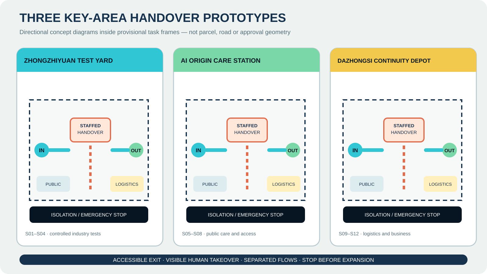
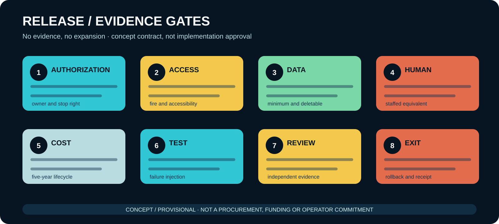

Design-model site area11.41 km²
Concept green ratio29.6%
Concept public-space ratio17.7%
Manual-equivalent contract coverage100%





Task and evidence status
23/23
announcement and Agent task coverage
9
professional standard responses
15/15
design-depth items complete
3
provisional key-area warnings
Required-figure index